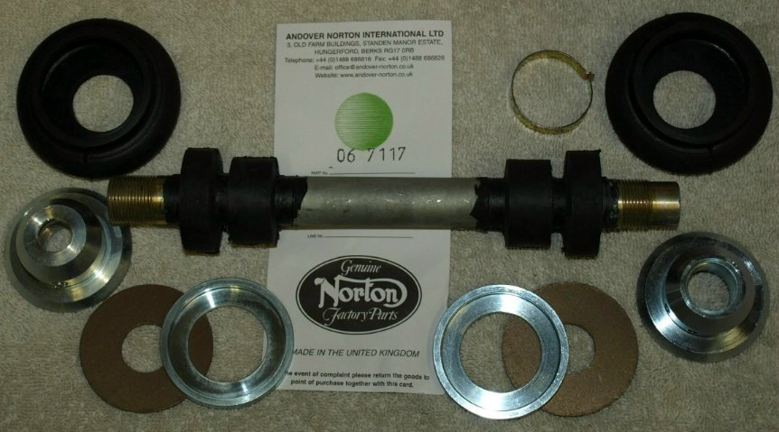

This rear isolastic kit comes with the following parts:
This kit will install in the MK3 rear engine mount and the Pre-MK3 engine mounts with no modification to the rear mount.
The price for this kit (06-7117) is
$75.25
as of
02/12/21.
This page was written and designed by F. H. Eaton & Associates if you have any questions or comments please contact us at eaton@oldbritts.com